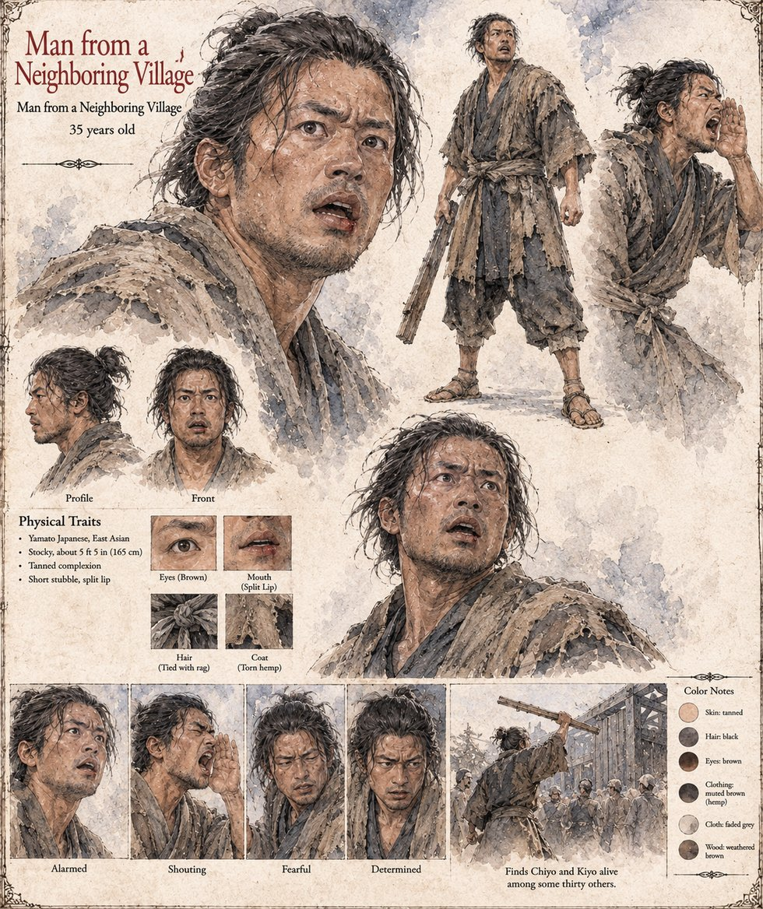

The Man from a Neighboring Village
Man from a neighboring village · finds Chiyo and Kiyo alive when the gates come down · 35 by his sheet
A man from a neighboring village who is in the crowd when the gates come down. He finds Chiyo and Kiyo alive among some thirty other held persons and sends word back through the crowd ahead of Isamu, shouting rather than speaking.
The manuscript gives him no description, and the sheet’s are invented for consistency. It draws him stocky at about 5 ft 5 in, tanned, with a round honest face, short stubble and a fresh split lip, black hair tied back in a rag, brown eyes wide with alarm, and a torn hemp work coat over a grey under-robe, a door bar torn from the gate in his hand. Its panels are Alarmed, Shouting, Fearful and Determined; its scenes show him full length, calling with a hand cupped at his mouth, and holding the bar high before the gate frame and a crowd, captioned Finds Chiyo and Kiyo alive among some thirty others.